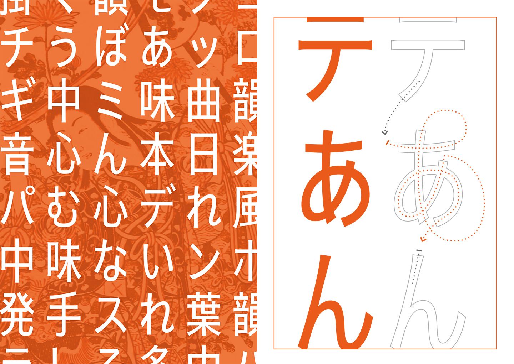
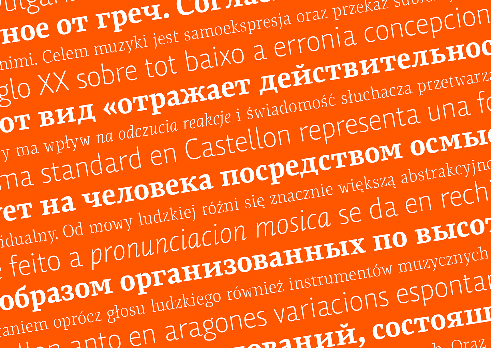
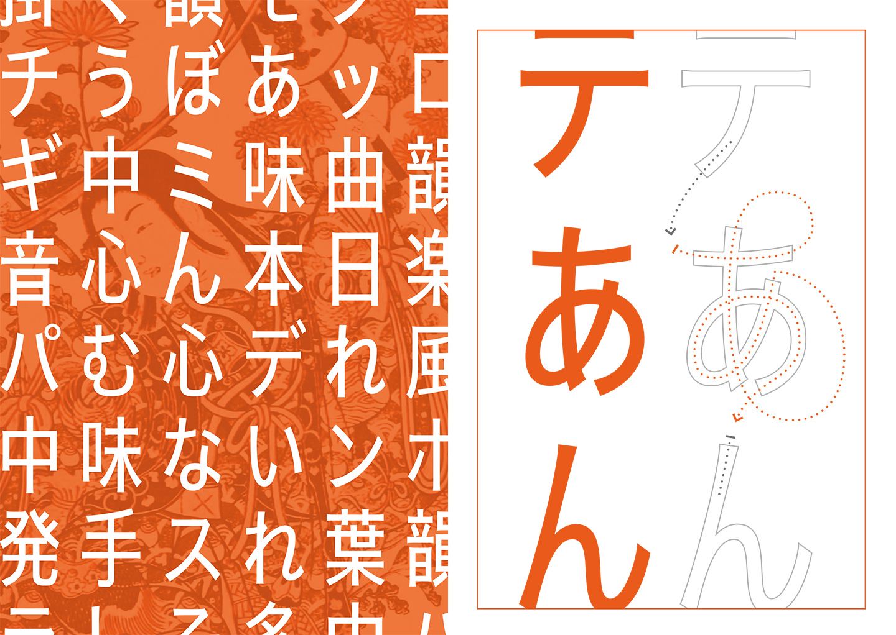
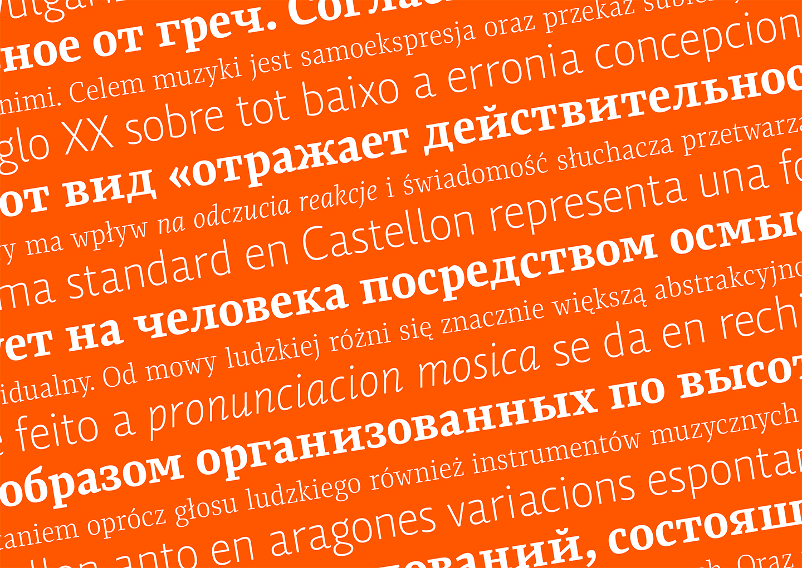
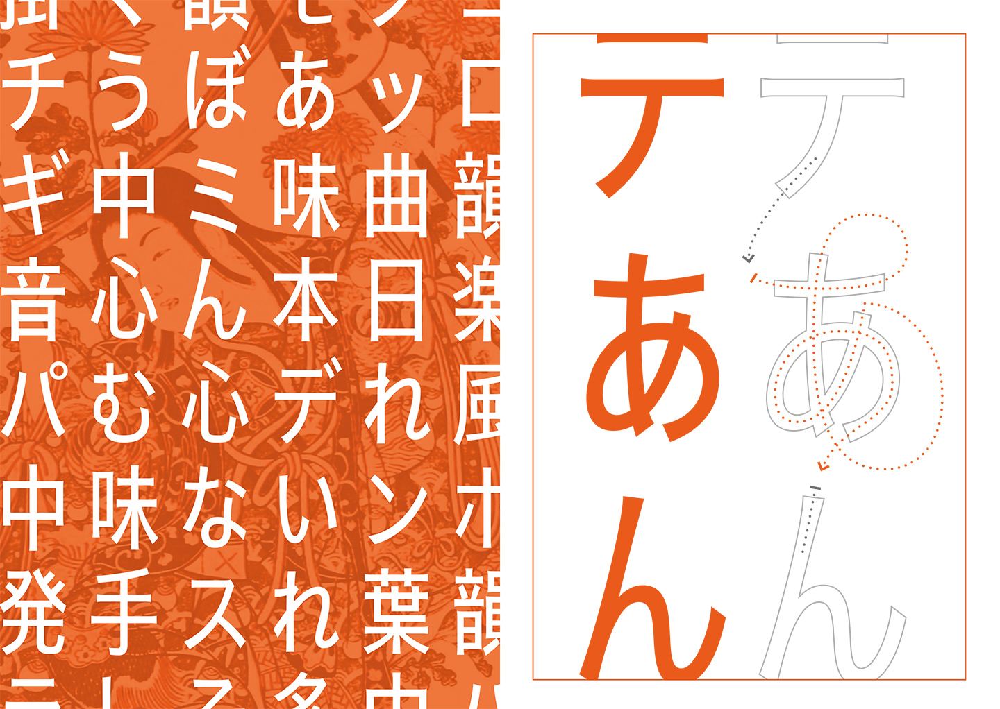
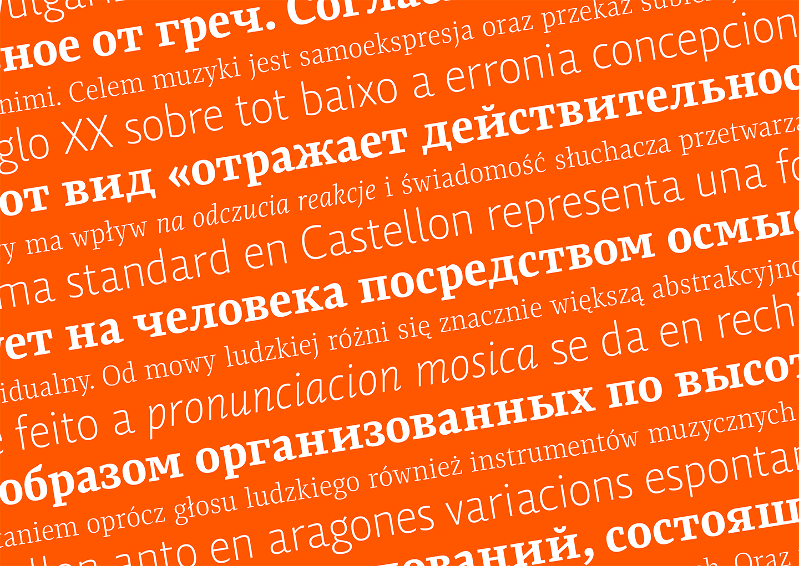

Rock & Roll is a multi-script type system ready to go up on stage and performs a set list full of your favourite songs. This duo is composed by Rock, the storming serif who plays Latin, Greek, and Cyrillic; and Roll, the groovy sans serif who plays Latin, Arabic, and Japanese.
Both typefaces were designed to play together, even when Roll is not just the sans serif version of Rock. They share DNA, but their voices are different: Rock has an old-school and decided fragrance, and Roll’s flavour is benignant and mature — but its combination will be always harmonic. Let yourself go for the rhythm and enjoy of its condensed proportions for longer lyrics and its sharp outlines for an immersive and heavenly experience.
[Project developed as part of the MATD 16/17]

